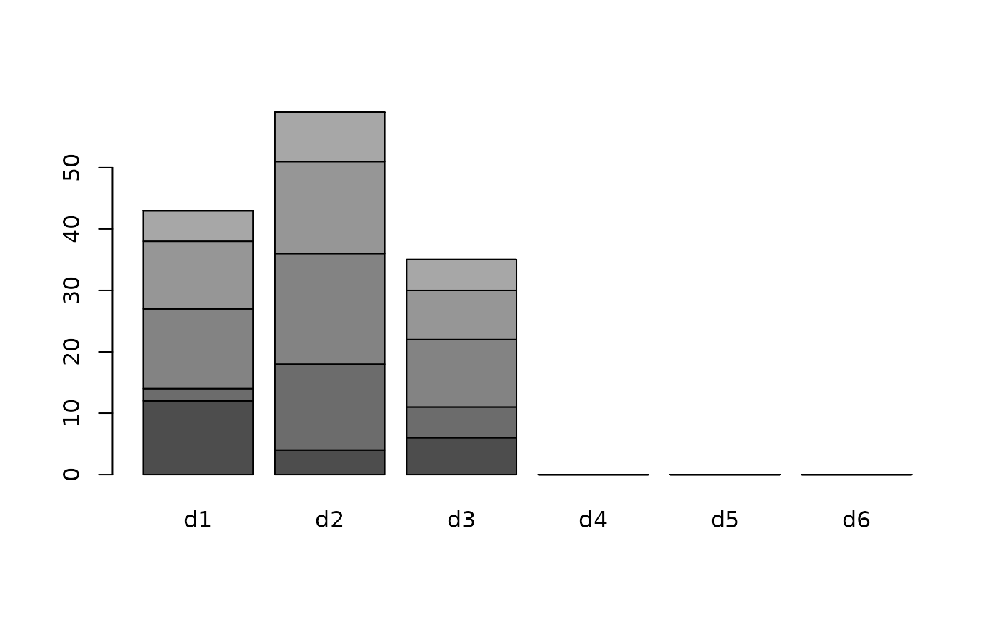
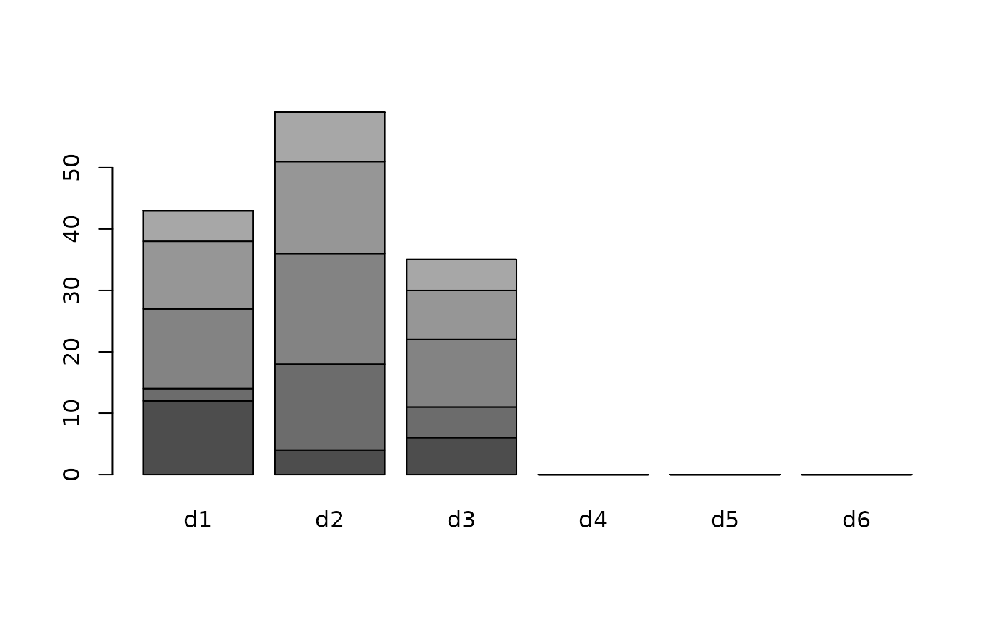

Creates a site frequency spectrum based on a dartR or genlight object
gl.sfs.RdCreates a site frequency spectrum based on a dartR or genlight object
gl.sfs(
x,
minbinsize = 0,
folded = TRUE,
singlepop = FALSE,
plot.out = TRUE,
verbose = NULL
)Arguments
- x
dartR/genlight object
- minbinsize
remove bins from the left of the sfs. For example to remove singletons (alleles only occurring once among all individuals) set minbinsize to 2. If set to zero, also monomorphic (d0) loci are returned.
- folded
if set to TRUE (default) a folded sfs (minor allele frequency sfs) is returned. If set to FALSE then an unfolded (derived allele frequency sfs) is returned. It is assumed that 0 is homozygote for the reference and 2 is homozygote for the derived allele. So you need to make sure your coding is correct.
- singlepop
switch to force to create a one-dimensional sfs, even though the genlight/dartR object contains more than one population
- plot.out
Specify if plot is to be produced [default TRUE].
- verbose
Verbosity: 0, silent or fatal errors; 1, begin and end; 2, progress log ; 3, progress and results summary; 5, full report [default 2, unless specified using gl.set.verbosity].
Value
returns a site frequency spectrum, either a one dimensional vector (only a single population in the dartR/genlight object or singlepop=TRUE) or an n-dimensional array (n is the number of populations in the genlight/dartR object). If the dartR/genlight object consists of several populations the multidimensional site frequency spectrum for each population is returned [=a multidimensional site frequency spectrum]. Be aware the multidimensional spectrum works only for a limited number of population and individuals [if too high the table command used internally will through an error as the number of populations and individuals (and therefore dimensions) are too large]. To get a single sfs for a genlight/dartR object with multiple populations, you need to set singlepop to TRUE. The returned sfs can be used to analyse demographics, e.g. using fastsimcoal2.
References
Excoffier L., Dupanloup I., Huerta-Sánchez E., Sousa V. C. and Foll M. (2013) Robust demographic inference from genomic and SNP data. PLoS genetics 9(10)
Examples
gl.sfs(possums.gl[1:30,])
#> Starting gl.sfs
#> Processing genlight object with SNP data
#>
 #> Completed: gl.sfs
#>
#> d0 d1 d2 d3 d4 d5 d6 d7 d8 d9 d10 d11 d12 d13 d14 d15 d16 d17 d18 d19
#> 24 6 6 3 5 3 3 4 6 8 2 7 5 1 4 6 4 8 11 11
#> d20 d21 d22 d23 d24 d25 d26 d27 d28 d29 d30
#> 4 5 3 9 14 7 9 6 7 5 4
gl.sfs(possums.gl[c(1:5,31:33),], minbinsize=1)
#> Starting gl.sfs
#> Processing genlight object with SNP data
#>

#> Completed: gl.sfs
#>
#> B
#> A d1 d2 d3 d4 d5 d6
#> d1 12 4 6 0 0 0
#> d2 2 14 5 0 0 0
#> d3 13 18 11 0 0 0
#> d4 11 15 8 0 0 0
#> d5 5 8 5 0 0 0
#> d6 0 0 0 0 0 0
#> d7 0 0 0 0 0 0
#> d8 0 0 0 0 0 0
#> d9 0 0 0 0 0 0
#> d10 0 0 0 0 0 0
#> Completed: gl.sfs
#>
#> d0 d1 d2 d3 d4 d5 d6 d7 d8 d9 d10 d11 d12 d13 d14 d15 d16 d17 d18 d19
#> 24 6 6 3 5 3 3 4 6 8 2 7 5 1 4 6 4 8 11 11
#> d20 d21 d22 d23 d24 d25 d26 d27 d28 d29 d30
#> 4 5 3 9 14 7 9 6 7 5 4
gl.sfs(possums.gl[c(1:5,31:33),], minbinsize=1)
#> Starting gl.sfs
#> Processing genlight object with SNP data
#>

#> Completed: gl.sfs
#>
#> B
#> A d1 d2 d3 d4 d5 d6
#> d1 12 4 6 0 0 0
#> d2 2 14 5 0 0 0
#> d3 13 18 11 0 0 0
#> d4 11 15 8 0 0 0
#> d5 5 8 5 0 0 0
#> d6 0 0 0 0 0 0
#> d7 0 0 0 0 0 0
#> d8 0 0 0 0 0 0
#> d9 0 0 0 0 0 0
#> d10 0 0 0 0 0 0